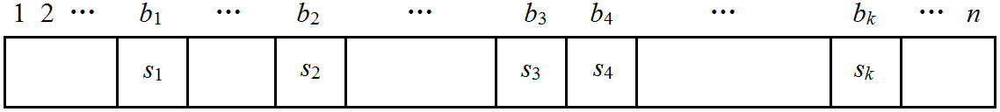

给定 $n$ 个仅包含小写字母的字符串 $s_i$ ，对于每个字符串给出 $q_i$ 个询问，每次询问给出一个正整数 $k_{ij}$ ，你需要输出所有满足以下条件的的字符串 $a$ 的数量：
你只需要输出答案模 $10^9 + 7$ 的值。
第一行包含一个正整数 $n$ ($n \leq 10000$)。
接下来的 $2n$ 行，第 $2i$ 行包含一个字符串 $s_i$ 和一个正整数 $q_i$，第 $2i+1$ 行包含 $q_i$ 个正整数，分别表示 $k_{ij}$，其中 $\sum\limits_{i=1}^n |s_i|, \sum\limits_{i=1}^n q_i, k_{ij} \leq 10^5$。
对一个长度为 $k$ 的串 $s$，它要作为一个长度为 $n$ 的串 $a$ 的子序列，首先由 $k \leq n$ (否则答案为 $0$)，显然不能简单地 $\dbinom nk 26^{n-k}$，否则会有重复计算，当然也不是 $\dbinom nk 25^{n-k}$，显然有遗漏。
我们考虑对一个满足条件的串 $a$，并记它所对应的 $s$ 为出现在最左边 (位置字典序最小) 的那个 $s$ (即从左往右贪心的结果)，那么，统计出来的结果就有对应性了。
不放设 $s_i$ 在 $a$ 中的位置为 $b_i$，如下图所示：

那么 $1$ 到 $b_1 - 1$ 这一段不能出现 $s_1$ (否则会有更优匹配)，同理，$b_1 + 1$ 到 $b_2 - 1$ 这一段不能出现 $s_2$ (但是可以出现 $s_1$)，这样一直下去，可能有点段的长度为 $0$ ($b_3 + 1$ 到 $b_4 - 1$)，最后 $b_{k-1} + 1$ 到 $b_k - 1$ 这一段不能出现 $s_k$，但是 $b_k + 1$ 到 $n$ 可以出现任何字母。
因此对应一个固定的 $b_k$，$b_k + 1$ 到 $n$ 可以出现任何字母，即有 $26^{n - b_k}$ 种情况，前面就是从 $b_k - 1$ 个格子中选 $k - 1$ 个，剩下的 $b_k - k$ 个任意填充 $25$ 个字母之一，故共有
$$ \binom {b_k-1} {k-1} \cdot 26^{n - b_k} \cdot 25^{b_k - k} $$
种情况，枚举 $b_k$ 从 $k$ 到 $n$，那么答案就是
$$ \sum_{i=k}^n \binom {i-1} {k-1} 26^{n-i} 25^{i-k} $$
(可以告诉你这个式子等于 $\sum\limits_{i=0}^{n-k} \dbinom n i 25^i$，不过化简后就没法做了)
这样，可以把原式转化为
$$ 26^{n-k} \left( \sum_{i=0}^{n-k} \binom {i+k-1} {k-1} (25 \cdot 26^{-1})^i \right) $$
预处理出 $25 \cdot 26^{-1} \equiv 423076927 \pmod {10^9 + 7}$，然后对于一个确定的 $k$，可以在 $O(n)$ 的时间预处理出右边括号内的表达式和 $26$ 的幂，然后在询问的时候 $O(1)$ 回答。
(scx: 那么每次询问都是 $O(n)$，复杂度不是变成 $O(qn)$ 了吗？)
注意到条件 $\sum k \leq 10^5$，故不同的 $k$ 至多只有 $2 \sqrt n = O \left( \sqrt n \right)$ 个 (精确的说应该是 $446$ 个)，所以只需对 $O \left( \sqrt n \right)$ 个不同的 $k$ 分别预处理一次并记忆化，相同的 $k$ 直接用之前算过的答案即可，时间复杂度 $O \left( q \sqrt n \right)$，可过。
#include <bits/stdc++.h>
#define N 100034
using namespace std;
typedef long long ll;
const ll mod = 1000000007ll, _div_ = 423076927ll;
char s[N];
int n, k, i;
int cnt = 0, Map[N];
ll inv[N], pw26[N];
ll ans, *f, g[N], F[476][N];
int main(){
int T1, T2;
pw26[0] = inv[1] = 1; pw26[1] = 26;
for(i = 2; i < N; ++i){
inv[i] = (mod - mod / i) * inv[mod % i] % mod;
pw26[i] = pw26[i - 1] * 26 % mod;
}
for(scanf("%d", &T1); T1; --T1){
scanf("%s", s); k = strlen(s);
if(!Map[k]){
Map[k] = ++cnt; f = F[cnt];
f[0] = g[0] = 1;
for(i = 1; i < N; ++i){
g[i] = g[i - 1] * _div_ % mod * (i + k - 1) % mod * inv[i] % mod;
(f[i] = f[i - 1] + g[i]) >= mod ? f[i] -= mod : 0;
}
}else f = F[Map[k]];
for(scanf("%d", &T2); T2; --T2){
scanf("%d", &n);
if((n -= k) < 0) ans = 0;
ans = f[n] * pw26[n] % mod;
printf("%d\n", (int)ans);
}
}
return 0;
}
坑1：要注意 $\sum k \leq 10^5$ 等类似的条件，它提示我们不同的 $k$ 并不是很多，因此可以使用记忆化，用 map/hash_map 或离散化存储，当然像本题 $k$ 不大的情况可以直接用数组 (桶) 存储。